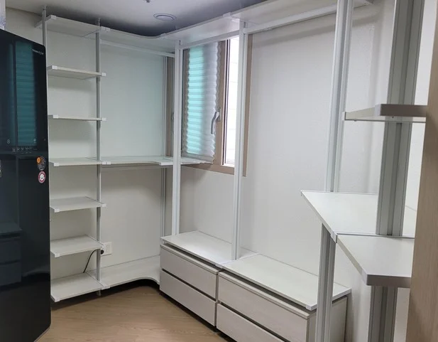

Making Cost
드레스룸 제작
비용
정확한 견적은 실측 후에 나옵니다. 그 전에는 방향을 잡는 단계입니다.
드레스룸 제작 비용은 몇 평이냐보다 어떤 구성이 들어가느냐에 더 크게 달라집니다. 같은 벽 길이라도 행거만 있는 구성과 서랍장·거울·조명이 들어가는 구성은 들어가는 자재와 작업 시간이 다릅니다.
공간 사진과 원하는 선반 수, 행거 크기를 알려주시면 대략적인 안내는 문자로 가능합니다. 다만 실측을 해 보면 벽 길이나 천장 높이가 생각과 달라 구성이 바뀌는 경우가 있어서, 확정 견적은 실측 후에 드립니다.

Situations
비용 문의 전에 알아두시면 좋은 점
사진 견적은 대략적인 안내입니다
벽 길이와 천장 높이를 실제로 재야 금액이 확정됩니다.
부속이 금액을 크게 바꿉니다
서랍장, 거울, 도어, 조명은 들어가는 만큼 비용이 올라갑니다.
모양이 복잡할수록 작업이 늘어납니다
ㄱ자·ㄷ자는 코너 연결 부분이 있어 일자형보다 손이 더 갑니다.
기존 행거 철거도 함께 볼 수 있습니다
철거가 필요하면 견적에 함께 반영해 안내합니다.
Checklist
드레스룸 제작 비용이 달라지는 조건
| 조건 | 확인하는 내용 | 비용에 미치는 영향 |
|---|---|---|
| 벽 길이·면 수 | 일자, ㄱ자, ㄷ자와 각 벽 길이 | 프레임과 선반 양이 정해집니다 |
| 천장 높이 | 바닥~천장 높이 | 기둥 길이와 선반 단수가 정해집니다 |
| 부속 구성 | 서랍장, 거울, 도어, 조명 | 추가되는 만큼 자재비가 늘어납니다 |
| 고정 방식 | 벽 고정 또는 천장고정형, 벽·천장 재질 | 보강이 필요하면 작업이 늘어납니다 |
| 현장 조건 | 층수, 엘리베이터, 기존 가구 철거 여부 | 운반과 작업 시간에 반영됩니다 |
Process
견적이 확정되기까지
사진·구성 보내기
방 사진과 원하는 선반 수, 행거 크기를 알려주세요.
대략 안내
받은 내용으로 가능한 구성과 대략적인 방향을 안내합니다.
실측 방문
치수와 벽·천장 상태를 직접 확인합니다.
확정 견적
실측 치수와 최종 구성으로 정확한 견적을 드립니다.
제작·설치 일정
견적 확인 후 제작과 설치 날짜를 정합니다.
FAQ
자주 묻는 질문
대략 견적과 실제 견적이 다를 수 있나요?
네. 실측해 보면 벽 길이나 천장 높이가 사진으로 본 것과 달라 구성이 바뀌는 경우가 있습니다. 그래서 확정 금액은 실측 후에 안내해 드립니다.
견적을 줄이려면 어떻게 하나요?
꼭 필요한 부속만 넣고, 선반 수를 쓰임에 맞게 조정하면 비용을 줄일 수 있습니다. 실측 때 구성을 함께 조정해 드립니다.
실측만 받아볼 수 있나요?
실측 방문 일정은 문자로 상담 후 정해 드립니다. 방문 전에 사진과 원하는 구성을 보내주시면 실측이 더 빨라집니다.
색상에 따라 비용이 달라지나요?
고르시는 자재와 색상에 따라 달라질 수 있습니다. 원하시는 색상을 문의해 주시면 함께 안내해 드립니다.
기존 드레스룸 철거 비용도 포함되나요?
철거가 필요하면 실측 때 확인해 견적에 함께 반영합니다.